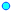
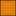
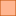

<!doctype html>
<html lang="en">
    <head>
        <meta charset="utf-8">
        <meta http-equiv="X-UA-Compatible" content="IE=edge">
        <meta name="viewport" content="initial-scale=1,user-scalable=no,maximum-scale=1,width=device-width">
        <meta name="mobile-web-app-capable" content="yes">
        <meta name="apple-mobile-web-app-capable" content="yes">
        <link rel="stylesheet" href="css/leaflet.css">
        <link rel="stylesheet" href="css/qgis2web.css"><link rel="stylesheet" href="css/fontawesome-all.min.css">
        <style>
        #map {
            width: "100%";
            height: 559px;
        }
        </style>
        <title></title>
    </head>
    <body>
        <div id="map">
        </div>
        <script src="js/qgis2web_expressions.js"></script>
        <script src="js/leaflet.js"></script>
        <script src="js/leaflet.rotatedMarker.js"></script>
        <script src="js/leaflet.pattern.js"></script>
        <script src="js/leaflet-hash.js"></script>
        <script src="js/Autolinker.min.js"></script>
        <script src="js/rbush.min.js"></script>
        <script src="js/labelgun.min.js"></script>
        <script src="js/labels.js"></script>
        <script src="data/AdministracionLocaldelAgua_1.js"></script>
        <script src="data/AutoridadAdministrativadelAgua_2.js"></script>
        <script src="data/CuencasTransfronterizas_3.js"></script>
        <script src="data/CuencasHidrogrficas_4.js"></script>
        <script src="data/Estaciones_5.js"></script>
        <script>
        var map = L.map('map', {
            zoomControl:true, maxZoom:28, minZoom:1
        }).fitBounds([[-18.808315556750003,-81.65233775850179],[0.41904700674999873,-68.3278100214982]]);
        var hash = new L.Hash(map);
        map.attributionControl.setPrefix('<a href="https://www.geogpsperu.com" target="_blank">GEO GPS PERÚ</a> &middot; <a href="https://leafletjs.com" title="A JS library for interactive maps">Leaflet</a> &middot; <a href="https://www.geogpsperu.com">Suyo Pomalía</a>');
        var autolinker = new Autolinker({truncate: {length: 30, location: 'smart'}});
        var bounds_group = new L.featureGroup([]);
        function setBounds() {
        }
        map.createPane('pane_OpenStreetMap_0');
        map.getPane('pane_OpenStreetMap_0').style.zIndex = 400;
        var layer_OpenStreetMap_0 = L.tileLayer('https://tile.openstreetmap.org/{z}/{x}/{y}.png', {
            pane: 'pane_OpenStreetMap_0',
            opacity: 1.0,
            attribution: '',
            minZoom: 1,
            maxZoom: 28,
            minNativeZoom: 0,
            maxNativeZoom: 19
        });
        layer_OpenStreetMap_0;
        map.addLayer(layer_OpenStreetMap_0);
        function pop_AdministracionLocaldelAgua_1(feature, layer) {
            var popupContent = '<table>\
                    <tr>\
                        <th scope="row">ALA:</th>\
                        <td>' + (feature.properties['NAME_ALA'] !== null ? autolinker.link(feature.properties['NAME_ALA'].toLocaleString()) : '') + '</td>\
                    </tr>\
                    <tr>\
                        <th scope="row">AAA:</th>\
                        <td>' + (feature.properties['NAME_AAA'] !== null ? autolinker.link(feature.properties['NAME_AAA'].toLocaleString()) : '') + '</td>\
                    </tr>\
                </table>';
            layer.bindPopup(popupContent, {maxHeight: 400});
        }

        function style_AdministracionLocaldelAgua_1_0() {
            return {
                pane: 'pane_AdministracionLocaldelAgua_1',
                opacity: 1,
                color: 'rgba(190,76,0,0.5)',
                dashArray: '',
                lineCap: 'butt',
                lineJoin: 'miter',
                weight: 1.0, 
                fill: true,
                fillOpacity: 1,
                fillColor: 'rgba(255,182,145,0.5)',
                interactive: true,
            }
        }
        map.createPane('pane_AdministracionLocaldelAgua_1');
        map.getPane('pane_AdministracionLocaldelAgua_1').style.zIndex = 401;
        map.getPane('pane_AdministracionLocaldelAgua_1').style['mix-blend-mode'] = 'normal';
        var layer_AdministracionLocaldelAgua_1 = new L.geoJson(json_AdministracionLocaldelAgua_1, {
            attribution: '',
            interactive: true,
            dataVar: 'json_AdministracionLocaldelAgua_1',
            layerName: 'layer_AdministracionLocaldelAgua_1',
            pane: 'pane_AdministracionLocaldelAgua_1',
            onEachFeature: pop_AdministracionLocaldelAgua_1,
            style: style_AdministracionLocaldelAgua_1_0,
        });
        bounds_group.addLayer(layer_AdministracionLocaldelAgua_1);
        function pop_AutoridadAdministrativadelAgua_2(feature, layer) {
            var popupContent = '<table>\
                    <tr>\
                        <th scope="row">AAA:</th>\
                        <td>' + (feature.properties['NAME_AAA'] !== null ? autolinker.link(feature.properties['NAME_AAA'].toLocaleString()) : '') + '</td>\
                    </tr>\
                </table>';
            layer.bindPopup(popupContent, {maxHeight: 400});
        }

        function style_AutoridadAdministrativadelAgua_2_0() {
            return {
                pane: 'pane_AutoridadAdministrativadelAgua_2',
                opacity: 1,
                color: 'rgba(156,25,249,0.5)',
                dashArray: '',
                lineCap: 'butt',
                lineJoin: 'miter',
                weight: 1.0, 
                fill: true,
                fillOpacity: 1,
                fillColor: 'rgba(253,201,255,0.5)',
                interactive: true,
            }
        }
        map.createPane('pane_AutoridadAdministrativadelAgua_2');
        map.getPane('pane_AutoridadAdministrativadelAgua_2').style.zIndex = 402;
        map.getPane('pane_AutoridadAdministrativadelAgua_2').style['mix-blend-mode'] = 'normal';
        var layer_AutoridadAdministrativadelAgua_2 = new L.geoJson(json_AutoridadAdministrativadelAgua_2, {
            attribution: '',
            interactive: true,
            dataVar: 'json_AutoridadAdministrativadelAgua_2',
            layerName: 'layer_AutoridadAdministrativadelAgua_2',
            pane: 'pane_AutoridadAdministrativadelAgua_2',
            onEachFeature: pop_AutoridadAdministrativadelAgua_2,
            style: style_AutoridadAdministrativadelAgua_2_0,
        });
        bounds_group.addLayer(layer_AutoridadAdministrativadelAgua_2);
        function pop_CuencasTransfronterizas_3(feature, layer) {
            var popupContent = '<table>\
                    <tr>\
                        <th scope="row">Nombre:</th>\
                        <td>' + (feature.properties['NOMBRE'] !== null ? autolinker.link(feature.properties['NOMBRE'].toLocaleString()) : '') + '</td>\
                    </tr>\
                    <tr>\
                        <th scope="row">Código:</th>\
                        <td>' + (feature.properties['CODIGO'] !== null ? autolinker.link(feature.properties['CODIGO'].toLocaleString()) : '') + '</td>\
                    </tr>\
                    <tr>\
                        <th scope="row">Límite (shp):</th>\
                        <td>' + (feature.properties['Limite'] !== null ? autolinker.link(feature.properties['Limite'].toLocaleString()) : '') + '</td>\
                    </tr>\
                </table>';
            layer.bindPopup(popupContent, {maxHeight: 400});
        }

        function style_CuencasTransfronterizas_3_0() {
            return {
                pane: 'pane_CuencasTransfronterizas_3',
                opacity: 1,
                color: 'rgba(0,0,0,0.5)',
                dashArray: '',
                lineCap: 'butt',
                lineJoin: 'miter',
                weight: 2.0, 
                fill: true,
                fillOpacity: 1,
                fillColor: 'rgba(0,0,0,0.13529411764705881)',
                interactive: true,
            }
        }
        map.createPane('pane_CuencasTransfronterizas_3');
        map.getPane('pane_CuencasTransfronterizas_3').style.zIndex = 403;
        map.getPane('pane_CuencasTransfronterizas_3').style['mix-blend-mode'] = 'normal';
        var layer_CuencasTransfronterizas_3 = new L.geoJson(json_CuencasTransfronterizas_3, {
            attribution: '',
            interactive: true,
            dataVar: 'json_CuencasTransfronterizas_3',
            layerName: 'layer_CuencasTransfronterizas_3',
            pane: 'pane_CuencasTransfronterizas_3',
            onEachFeature: pop_CuencasTransfronterizas_3,
            style: style_CuencasTransfronterizas_3_0,
        });
        bounds_group.addLayer(layer_CuencasTransfronterizas_3);
        function pop_CuencasHidrogrficas_4(feature, layer) {
            var popupContent = '<table>\
                    <tr>\
                        <th scope="row">Nombre:</th>\
                        <td>' + (feature.properties['nombre'] !== null ? autolinker.link(feature.properties['nombre'].toLocaleString()) : '') + '</td>\
                    </tr>\
                    <tr>\
                        <th scope="row">Red Hidrográfica:</th>\
                        <td>' + (feature.properties['rios_lagos'] !== null ? autolinker.link(feature.properties['rios_lagos'].toLocaleString()) : '') + '</td>\
                    </tr>\
                    <tr>\
                        <th scope="row">Límites:</th>\
                        <td>' + (feature.properties['lim_cuenca'] !== null ? autolinker.link(feature.properties['lim_cuenca'].toLocaleString()) : '') + '</td>\
                    </tr>\
                    <tr>\
                        <th scope="row">Curvas de Nivel:</th>\
                        <td>' + (feature.properties['curvas'] !== null ? autolinker.link(feature.properties['curvas'].toLocaleString()) : '') + '</td>\
                    </tr>\
                </table>';
            layer.bindPopup(popupContent, {maxHeight: 400});
        }

        function style_CuencasHidrogrficas_4_0(feature) {
            switch(String(feature.properties['q2wHide_nomb_uh_n1'])) {
                case 'Región Hidrográfica del Pacífico':
                    return {
                pane: 'pane_CuencasHidrogrficas_4',
                opacity: 1,
                color: 'rgba(98,90,0,0.6)',
                dashArray: '',
                lineCap: 'butt',
                lineJoin: 'miter',
                weight: 1.0, 
                fill: true,
                fillOpacity: 1,
                fillColor: 'rgba(255,252,37,0.6)',
                interactive: true,
            }
                    break;
                case 'Región Hidrográfica del Amazonas':
                    return {
                pane: 'pane_CuencasHidrogrficas_4',
                opacity: 1,
                color: 'rgba(41,81,7,0.6)',
                dashArray: '',
                lineCap: 'butt',
                lineJoin: 'miter',
                weight: 1.0, 
                fill: true,
                fillOpacity: 1,
                fillColor: 'rgba(139,232,152,0.6)',
                interactive: true,
            }
                    break;
                case 'Región Hidrográfica del Titicaca':
                    return {
                pane: 'pane_CuencasHidrogrficas_4',
                opacity: 1,
                color: 'rgba(109,47,0,0.6)',
                dashArray: '',
                lineCap: 'butt',
                lineJoin: 'miter',
                weight: 1.0, 
                fill: true,
                fillOpacity: 1,
                fillColor: 'rgba(219,127,13,0.6)',
                interactive: true,
            }
                    break;
            }
        }
        map.createPane('pane_CuencasHidrogrficas_4');
        map.getPane('pane_CuencasHidrogrficas_4').style.zIndex = 404;
        map.getPane('pane_CuencasHidrogrficas_4').style['mix-blend-mode'] = 'normal';
        var layer_CuencasHidrogrficas_4 = new L.geoJson(json_CuencasHidrogrficas_4, {
            attribution: '',
            interactive: true,
            dataVar: 'json_CuencasHidrogrficas_4',
            layerName: 'layer_CuencasHidrogrficas_4',
            pane: 'pane_CuencasHidrogrficas_4',
            onEachFeature: pop_CuencasHidrogrficas_4,
            style: style_CuencasHidrogrficas_4_0,
        });
        bounds_group.addLayer(layer_CuencasHidrogrficas_4);
        map.addLayer(layer_CuencasHidrogrficas_4);
        function pop_Estaciones_5(feature, layer) {
            var popupContent = '<table>\
                    <tr>\
                        <th scope="row">Tipo:</th>\
                        <td>' + (feature.properties['TIP_EST'] !== null ? autolinker.link(feature.properties['TIP_EST'].toLocaleString()) : '') + '</td>\
                    </tr>\
                    <tr>\
                        <th scope="row">Subtipo:</th>\
                        <td>' + (feature.properties['TIP_SUBEST'] !== null ? autolinker.link(feature.properties['TIP_SUBEST'].toLocaleString()) : '') + '</td>\
                    </tr>\
                    <tr>\
                        <th scope="row">Estado:</th>\
                        <td>' + (feature.properties['ESTADO'] !== null ? autolinker.link(feature.properties['ESTADO'].toLocaleString()) : '') + '</td>\
                    </tr>\
                    <tr>\
                        <th scope="row">Inicio:</th>\
                        <td>' + (feature.properties['ANO_INICIO'] !== null ? autolinker.link(feature.properties['ANO_INICIO'].toLocaleString()) : '') + '</td>\
                    </tr>\
                    <tr>\
                        <th scope="row">Final:</th>\
                        <td>' + (feature.properties['ANO_FINAL'] !== null ? autolinker.link(feature.properties['ANO_FINAL'].toLocaleString()) : '') + '</td>\
                    </tr>\
                    <tr>\
                        <th scope="row">Nombre:</th>\
                        <td>' + (feature.properties['Nombre'] !== null ? autolinker.link(feature.properties['Nombre'].toLocaleString()) : '') + '</td>\
                    </tr>\
                    <tr>\
                        <th scope="row">Código:</th>\
                        <td>' + (feature.properties['CODIGO'] !== null ? autolinker.link(feature.properties['CODIGO'].toLocaleString()) : '') + '</td>\
                    </tr>\
                    <tr>\
                        <th scope="row">Descargar:</th>\
                        <td>' + (feature.properties['LINK'] !== null ? autolinker.link(feature.properties['LINK'].toLocaleString()) : '') + '</td>\
                    </tr>\
                </table>';
            layer.bindPopup(popupContent, {maxHeight: 400});
        }

        function style_Estaciones_5_0(feature) {
            switch(String(feature.properties['TIP_EST'])) {
                case 'CLIMATICA':
                    return {
                pane: 'pane_Estaciones_5',
                radius: 4.0,
                opacity: 1,
                color: 'rgba(1,73,255,1.0)',
                dashArray: '',
                lineCap: 'butt',
                lineJoin: 'miter',
                weight: 1,
                fill: true,
                fillOpacity: 1,
                fillColor: 'rgba(21,255,252,1.0)',
                interactive: true,
            }
                    break;
                case 'HIDROMETRICA':
                    return {
                pane: 'pane_Estaciones_5',
                radius: 4.0,
                opacity: 1,
                color: 'rgba(58,0,120,1.0)',
                dashArray: '',
                lineCap: 'butt',
                lineJoin: 'miter',
                weight: 1,
                fill: true,
                fillOpacity: 1,
                fillColor: 'rgba(242,0,246,1.0)',
                interactive: true,
            }
                    break;
            }
        }
        map.createPane('pane_Estaciones_5');
        map.getPane('pane_Estaciones_5').style.zIndex = 405;
        map.getPane('pane_Estaciones_5').style['mix-blend-mode'] = 'normal';
        var layer_Estaciones_5 = new L.geoJson(json_Estaciones_5, {
            attribution: '',
            interactive: true,
            dataVar: 'json_Estaciones_5',
            layerName: 'layer_Estaciones_5',
            pane: 'pane_Estaciones_5',
            onEachFeature: pop_Estaciones_5,
            pointToLayer: function (feature, latlng) {
                var context = {
                    feature: feature,
                    variables: {}
                };
                return L.circleMarker(latlng, style_Estaciones_5_0(feature));
            },
        });
        bounds_group.addLayer(layer_Estaciones_5);
        var baseMaps = {};
        L.control.layers(baseMaps,{'Estaciones<br /><table><tr><td style="text-align: center;"></td><td>CLIMATICA</td></tr><tr><td style="text-align: center;"></td><td>HIDROMETRICA</td></tr></table>': layer_Estaciones_5,'Cuencas Hidrográficas<br /><table><tr><td style="text-align: center;"></td><td>Región Hidrográfica del Pacífico</td></tr><tr><td style="text-align: center;"></td><td>Región Hidrográfica del Amazonas</td></tr><tr><td style="text-align: center;"></td><td>Región Hidrográfica del Titicaca</td></tr></table>': layer_CuencasHidrogrficas_4,' Cuencas Transfronterizas': layer_CuencasTransfronterizas_3,' Autoridad Administrativa del Agua': layer_AutoridadAdministrativadelAgua_2,' Administracion Local del Agua': layer_AdministracionLocaldelAgua_1,"OpenStreetMap": layer_OpenStreetMap_0,}).addTo(map);
        setBounds();
        </script>
    </body>
</html>
